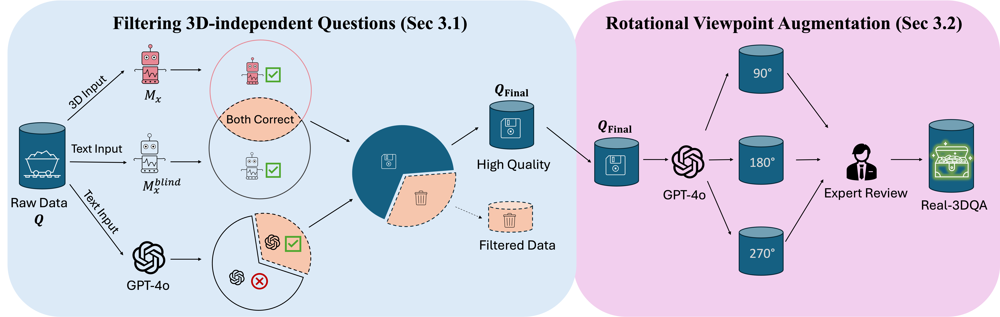
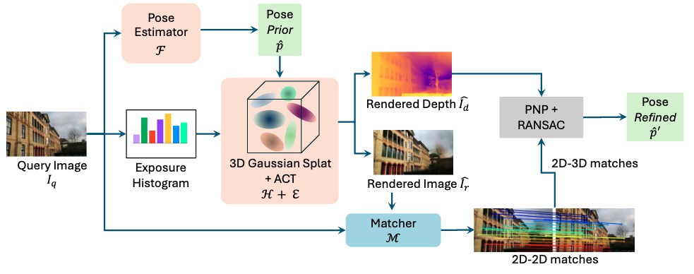
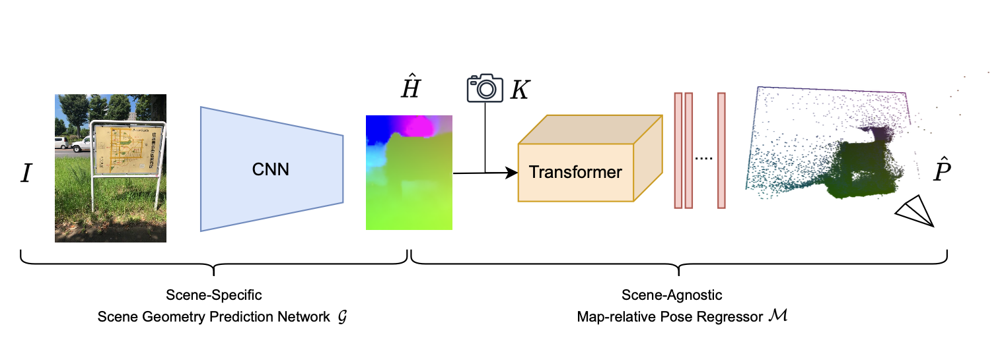
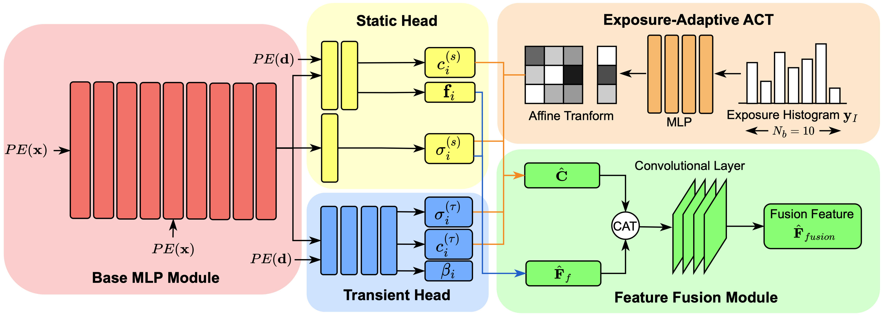
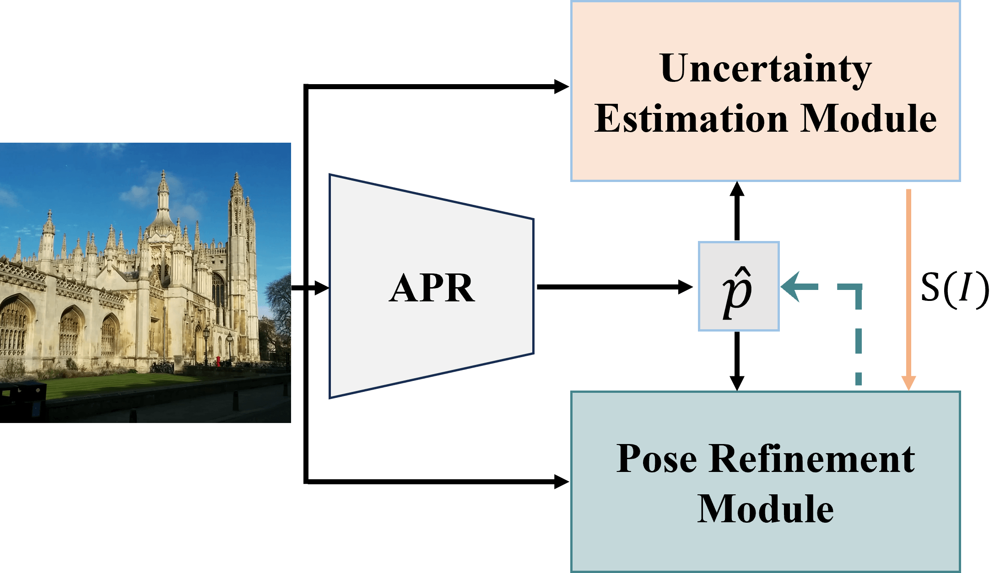
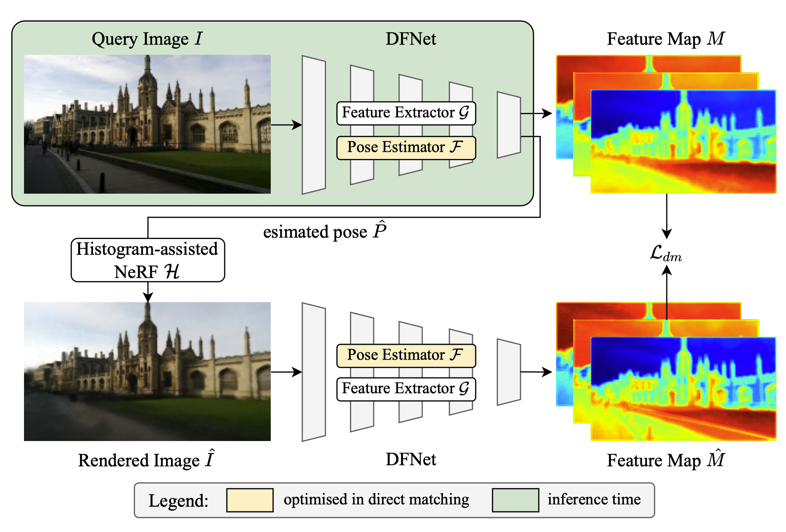
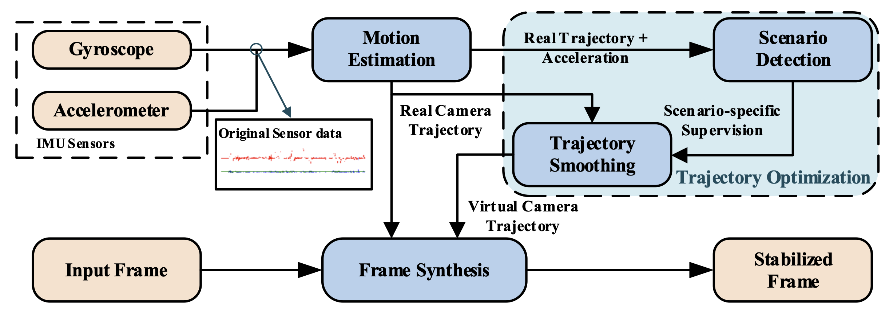
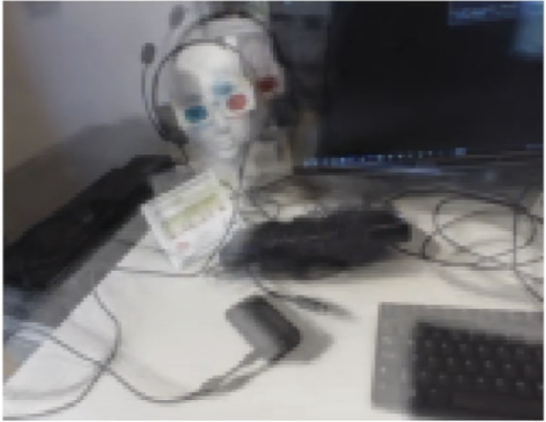

Research
I’m interested in 3D Vision, Computational Photography, and multi-modal AI.
-
AutoCompass: Accurate Visual Localization on Public Maps by Learning from Weak Labels
ECCV, 2026
AutoCompass learns accurate visual localization on public maps from noisy GPS labels, using relative poses when available to improve supervision.
-

Do 3D Large Language Models Really Understand 3D Spatial Relationships?
ICLR, 2026
project page / paper / code / data
Text-only models can match 3D-LLMs on popular 3D-QA benchmarks, exposing linguistic shortcuts; we introduce Real-3DQA and a 3D-reweighted training objective to stress-test and improve genuine spatial reasoning.
-

GS-CPR: Efficient Camera Pose Refinement via 3D Gaussian Splatting
ICLR, 2025
project page / paper / code
Efficient camera pose refinement using 3D Gaussian Splatting and 3D foundation model MASt3R.
-

When LLMs step into the 3D World: A Survey and Meta-Analysis of 3D Tasks via Multi-modal Large Language Models
arXiv, 2024
A survey paper that provides a comprehensive overview of the methodologies enabling LLMs to process, understand, and generate 3D data.
-

Scene Coordinate Reconstruction: Posing of Image Collections via Incremental Learning of a Relocalizer
ECCV, 2024 Oral (2.3%)
project page / paper / code
A novel learning-based structure-from-motion (SfM) method using scene coordinate regression.
-

Map-Relative Pose Regression for Visual Re-Localization
CVPR, 2024 Highlight (11.9%)
project page / paper / code
A scene-agnostic pose regression network that maps scene-specific representations to 6-DoF camera poses, enabling APRs to adapt to new scenes in 5 minutes.
-

Neural Refinement for Absolute Pose Regression with Feature Synthesis
CVPR, 2024
project page / paper / code
A post-process for refining generic APRs using neural feature fields.
-

HR-APR: APR-agnostic Framework with Uncertainty Estimation and Hierarchical Refinement for Camera Relocalisation
ICRA, 2024
project page / paper / code
An APR-agnostic framework that accelerates pose refinement via pose-retrieval and uncertainty estimation.
-

DFNet: Enhance Absolute Pose Regression with Direct Feature Matching
ECCV, 2022
project page / paper / code
Leveraging luma-prior NeRF and direct feature matching to enhance 6-DoF camera pose regression approaches.
-

Deep Online Video Stabilization using IMU Sensors
IEEE Transactions on Multimedia, 2022
Real-time and data driven video stabilization using IMU sensors.
-

Direct-PoseNet: Absolute Pose Regression with Photometric Consistency
3DV, 2021
project page / paper / code
6-DoF camera pose regression with NeRF-based differentiable renderer.


Academic Services
Reviewer: ECCV 2022, 2024, 2026; CVPR 2023, 2024, 2026; ICCV 2023, 2025*; ICRA 2024; RA-L 2024, 2025; NeurIPS 2025, 2026
* Outstanding Reviewer (Top 3%)